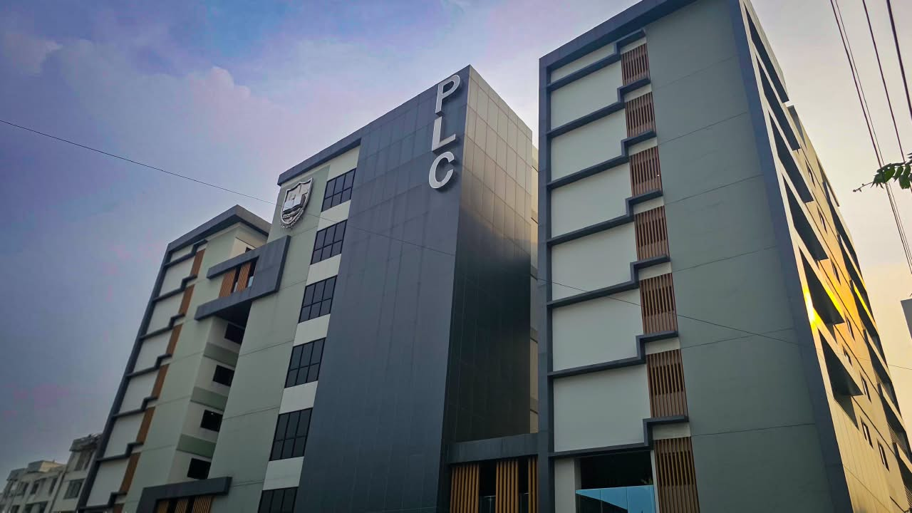
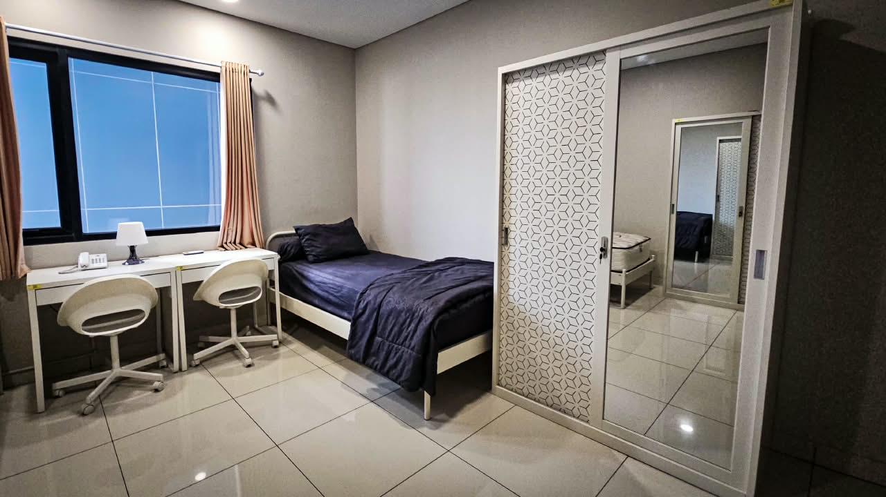

SMAK PENABUR Gading Serpong
Lokasi seluruh babak onsite, dengan akomodasi asrama di Penabur Learning Center.

Lokasi seluruh babak onsite, dengan akomodasi asrama di Penabur Learning Center.
Seluruh babak onsite Brilliant Competition XVIII berlangsung di SMAK PENABUR Gading Serpong. Foto berikut diambil di lokasi acara.




Jalan Layar Raya RT 003/002, Pakulonan Barat, Kelapa Dua, Kabupaten Tangerang, Banten
| Babak | Tanggal | Lokasi |
|---|---|---|
| Penyisihan 1 | 24–30 September | Online |
| TM & Live Class | 10 Oktober | Online |
| Kedatangan & check-in | 14 Oktober | Penabur Learning Center |
| Penyisihan 2 & Semifinal | 15 Oktober | SMAK PENABUR Gading Serpong |
| Final & Penutupan | 16 Oktober | SMAK PENABUR Gading Serpong |